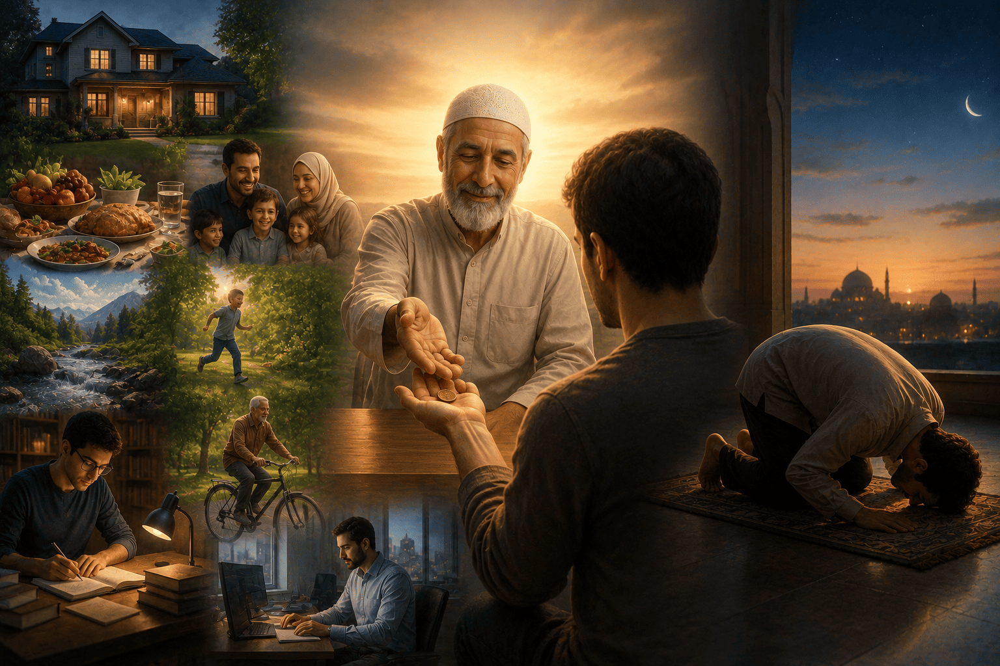
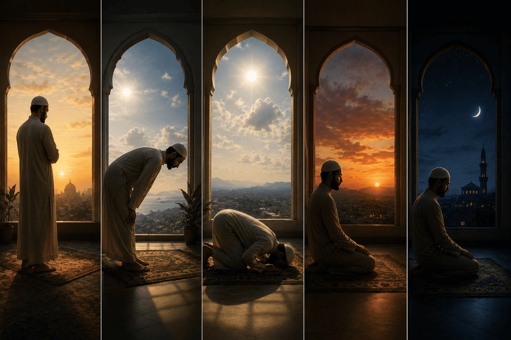
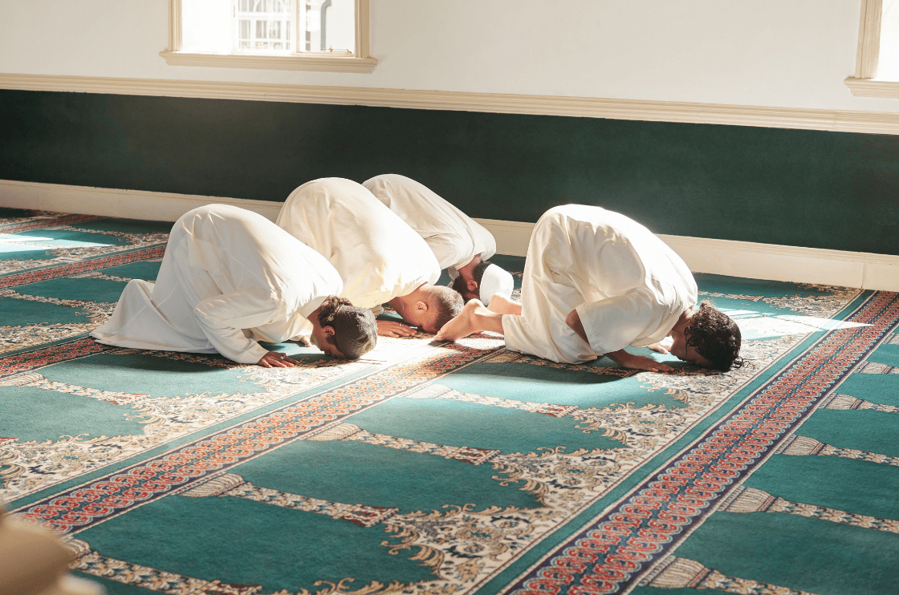
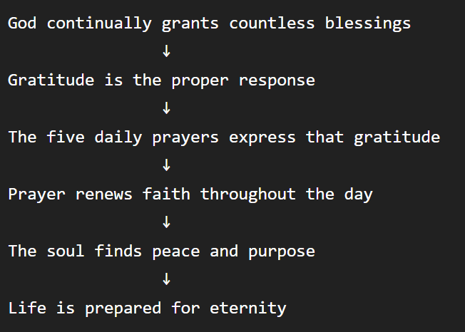

The Fourth Word of The Words by Imam Said Nursi explains why the five daily prayers (salat) are both reasonable and spiritually essential.
Rather than treating prayer as a difficult obligation, Imam Nursi presents it as a natural expression of gratitude and a source of peace. Imam Nursi asks:
If God has given us countless blessings, is it too much to devote a few minutes each day to thanking Him ?
Imam Nursi compares the five daily prayers to a servant working for a generous employer.
Imagine someone who:
Would it be unreasonable for the employer to ask the servant to spend a few minutes expressing thanks and fulfilling a simple duty ?
Of course not.
Likewise, God continually grants us:
The five daily prayers are a small act of gratitude in return.

Imam Nursi emphasizes that the prayers occupy only a very small portion of the day.
Although there are five prayer times, the total time devoted to them is relatively brief compared with the other hours spent working, resting, eating, or pursuing worldly activities.
Imam Nursi's point is:
The spiritual benefits far outweigh the small investment of time.
One of the most beautiful parts of the Fourth Word is Imam Nursi's explanation of why prayer is spread throughout the day.
Each prayer corresponds to both a time of day and a stage of human life.

Fajr (Dawn)
Represents
It reminds us that every new day is a fresh gift from God.
Dhuhr (Midday)
Represents
It is a pause to remember the One who grants our abilities.
Asr (Late Afternoon)
Represents
It encourages reflection before the day declines.
Maghrib (Sunset)
Represents
As daylight disappears, we remember that this world is not permanent.
Isha (Night)
Represents
Just as sleep ends one day and leads to another, death prepares the believer for eternal life.
Life is full of distractions.
Without regular remembrance:
Prayer acts as a recurring reminder that:

As in the Third Word, Imam Nursi repeats an important principle:
God does not need human worship, prayer benefits the one who prays.
Prayer:
Another recurring theme is that worldly life is brief.
The passing of each day mirrors the passing of our lives.
The five prayers help us remain conscious of:
Instead of fearing time, believers are invited to use it wisely.
The Fourth Word teaches that:
The five daily prayers are a small act of gratitude that aligns human life with the natural rhythm of creation, continually renewing faith and reminding us of our dependence on God.
